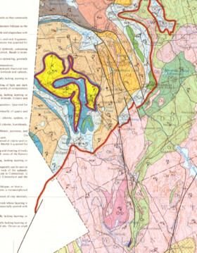

|
 |
(1/3)
Show/hide EXIF data| EXIF Tag | Value |
|---|---|
| BitsPerSample | 8 |
| BitsPerSample (1) | 8, 8, 8 |
| ColorComponents | 3 |
| Compression | Uncompressed |
| Directory | . |
| EncodingProcess | Baseline DCT, Huffman coding |
| ExifToolVersion | 12.76 |
| FileAccessDate | 2025:10:29 05:03:06-04:00 |
| FileInodeChangeDate | 2025:10:29 04:59:52-04:00 |
| FileModifyDate | 2025:09:22 14:45:23-04:00 |
| FileName | Bedrock_Map_Ridgefield.jpg |
| FilePermissions | -rw-rw-r-- |
| FileSize | 60 kB |
| FileType | JPEG |
| FileTypeExtension | jpg |
| ImageHeight | 359 |
| ImageHeight (1) | 16500 |
| ImageSize | 280x359 |
| ImageWidth | 280 |
| ImageWidth (1) | 12585 |
| JFIFVersion | 1.01 |
| MIMEType | image/jpeg |
| Megapixels | 0.101 |
| Orientation | Horizontal (normal) |
| PhotometricInterpretation | RGB |
| PlanarConfiguration | Chunky |
| ResolutionUnit | inches |
| ResolutionUnit (1) | inches |
| SamplesPerPixel | 3 |
| XMPToolkit | Adobe XMP Core 4.0-c316 44.253921, Sun Oct 01 2006 17:14:39 |
| XResolution | 300 |
| XResolution (1) | 96 |
| YCbCrSubSampling | YCbCr4:4:4 (1 1) |
| YResolution | 300 |
| YResolution (1) | 96 |